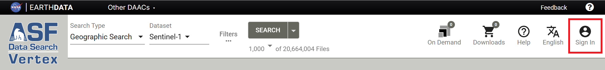
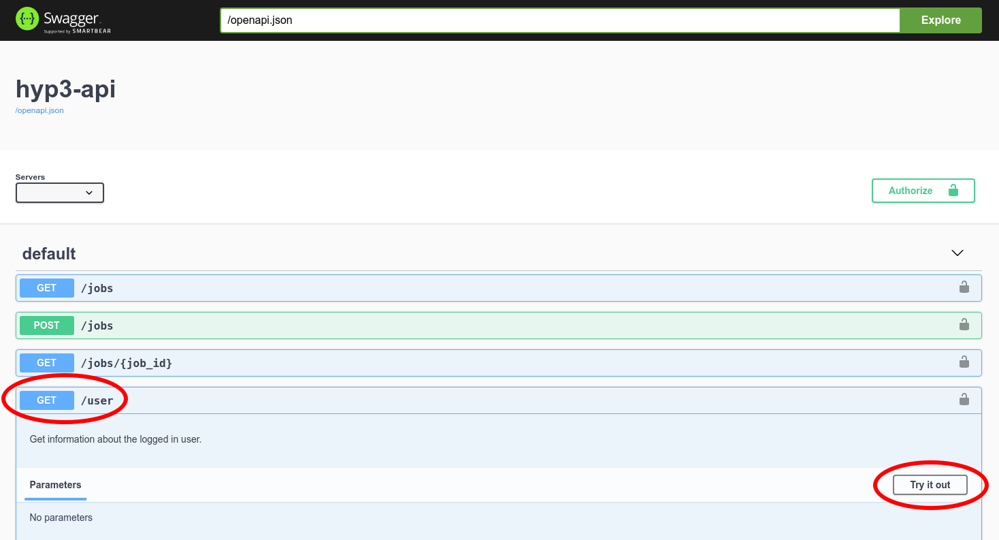
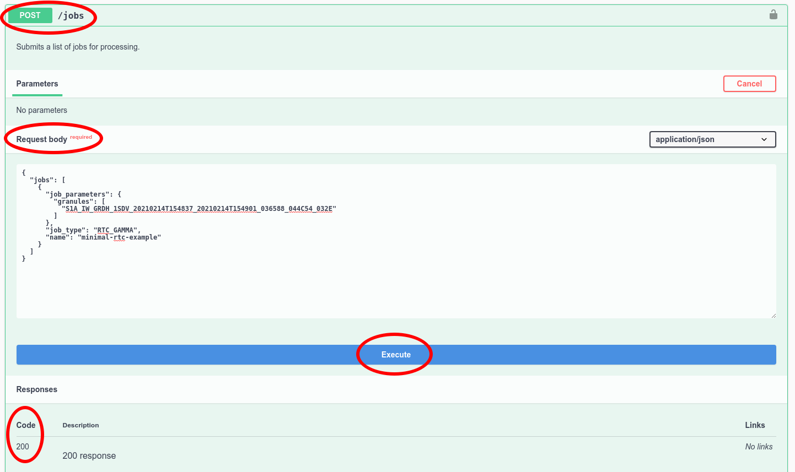

Using the HyP3 API¶
HyP3's API is built on OpenAPI and Swagger.
A friendly interface for exploring a HyP3 deployment's API is available at the /ui/ endpoint:
The process of using the HyP3 API is the same for any deployment of HyP3. Importantly, each deployment of HyP3 is completely independent, so if you submit jobs to one HyP3 deployment, you will not be able to see them in a different HyP3 deployment.
Authentication¶
In order to use the API, you'll need an asf-urs session cookie, which you can get
by signing in to Vertex.

Alternatively, you can
generate an Earthdata Login user token,
and enter it in the BearerAuth field by clicking the Authorize button in the Swagger UI.
Refer to the Authentication page for more detailed guidance on authentication methods.
Confirm you are authenticated¶
To confirm you are authenticated, you can run a GET request to our /user endpoint.
Select the blue GET button next to /user and click the Try it out button.

Then, execute the request and look at the response

If you get a Code 200 you should see a JSON dictionary of your user information.
Authentication Required
If you get a 401 response back you need to sign in to Vertex to get the asf-urs session cookie.
{
"detail": "No authorization token provided",
"status": 401,
"title": "Unauthorized",
"type": "about:blank"
}
Submitting Sentinel-1 RTC jobs¶
Jobs are submitted through the API by providing a JSON payload with a list of job definitions.
Sentinel-1 jobs are submitted using ESA granule IDs. A minimal job list for a single Sentinel-1 RTC job would look like:
{
"jobs": [
{
"name": "minimal-rtc-example",
"job_type": "RTC_GAMMA",
"job_parameters": {
"granules": [
"S1A_IW_GRDH_1SDV_20210214T154837_20210214T154901_036588_044C54_032E"
]
}
}
]
}
The job list may contain up to 200 job definitions. You can also provide custom RTC options:
{
"jobs": [
{
"name": "custom-rtc-example",
"job_type": "RTC_GAMMA",
"job_parameters": {
"granules": [
"S1B_IW_GRDH_1SDV_20210210T153157_20210210T153222_025546_030B48_2901"
],
"radiometry": "gamma0",
"scale": "power",
"dem_matching": false,
"include_dem": true,
"include_inc_map": true,
"include_scattering_area": false,
"speckle_filter": false
}
},
{
"name": "custom-rtc-example",
"job_type": "RTC_GAMMA",
"job_parameters": {
"granules": [
"S1B_IW_GRDH_1SDV_20210210T153132_20210210T153157_025546_030B48_4E31"
],
"radiometry": "sigma0",
"scale": "amplitude",
"dem_matching": false,
"include_dem": false,
"include_inc_map": false,
"include_scattering_area": true,
"speckle_filter": true
}
}
]
}
Submitting OPERA-RTC-S1 jobs¶
The OPERA-RTC-S1 job takes a single co-pol (VV or HH) ESA granule burst ID from a Sentinel-1 IW SLC acquisition that meets the date range and spatial extent constraints for processing.
Sentinel-1 IW Burst SLCs submitted for processing must have been acquired between April 14, 2016, and December 31, 2021, and must be north of -60 latitude.
{
"job_type": "OPERA_RTC_S1",
"name": "opera-rtc-s1-example",
"job_parameters": {
"granules": ["S1_073251_IW2_20200128T020712_VV_2944-BURST"]
}
}
Submitting Sentinel-1 InSAR jobs¶
You can also submit InSAR jobs for scene pairs using ESA granule IDs.
{
"jobs": [
{
"name": "minimal-insar-example",
"job_type": "INSAR_GAMMA",
"job_parameters": {
"granules": [
"S1A_IW_SLC__1SDV_20200203T172103_20200203T172122_031091_03929B_3048",
"S1A_IW_SLC__1SDV_20200110T172104_20200110T172123_030741_03864E_A996"
]
}
},
{
"name": "custom-insar-example",
"job_type": "INSAR_GAMMA",
"job_parameters": {
"granules": [
"S1A_IW_SLC__1SDV_20200527T195012_20200527T195028_032755_03CB56_3D96",
"S1A_IW_SLC__1SDV_20200515T195012_20200515T195027_032580_03C609_4EBA"
],
"looks": "10x2",
"include_look_vectors": true,
"include_los_displacement": true
}
}
]
}
Submitting Sentinel-1 Burst InSAR jobs¶
You can submit InSAR jobs using the INSAR_ISCE_BURST job type, which takes a single pair of ESA granule burst IDs, or use the INSAR_ISCE_MULTI_BURST job type, which accepts lists of up to 15 contiguous along-track burst IDs that will be merged together to produce reference and secondary input SLCs.
{
"jobs": [
{
"job_type": "INSAR_ISCE_BURST",
"name": "single-burst-example",
"job_parameters": {
"granules": [
"S1_136231_IW2_20200604T022312_VV_7C85-BURST",
"S1_136231_IW2_20200616T022313_VV_5D11-BURST"
]
}
},
{
"job_type": "INSAR_ISCE_MULTI_BURST",
"name": "multi-burst-example",
"job_parameters": {
"reference": [
"S1_136231_IW2_20200604T022312_VV_7C85-BURST",
"S1_136232_IW2_20200604T022315_VV_7C85-BURST"
],
"secondary": [
"S1_136231_IW2_20200616T022313_VV_5D11-BURST",
"S1_136232_IW2_20200616T022316_VV_5D11-BURST"
],
"apply_water_mask": true,
"looks": "5x1"
}
}
]
}
Submitting ARIA-S1-GUNW jobs¶
The ARIA-S1-GUNW job type takes a reference date, a secondary date, and an ARIA-S1-GUNW Frame ID as input. See the ARIA-S1-GUNW Product Guide Frame ID section for more details on these inputs.
{
"job_type": "ARIA_S1_GUNW",
"name": "gunw-example",
"job_parameters": {
"reference_date": "2019-12-31",
"secondary_date": "2018-12-12",
"frame_id": 11040
}
}
Submitting autoRIFT jobs¶
AutoRIFT supports processing Sentinel-1, Sentinel-2, or Landsat-8 Collection 2 pairs.
- Sentinel-1 jobs are submitted using ESA granule IDs
- Sentinel-2 jobs are submitted using ESA granule IDs
- Landsat-8 Collection 2 jobs are submitted using USGS scene IDs
To submit an example set of jobs including all supported missions, you could write a job list like:
{
"jobs": [
{
"name": "autorift-example",
"job_type": "AUTORIFT",
"job_parameters": {
"granules": [
"S1A_IW_SLC__1SSH_20170221T204710_20170221T204737_015387_0193F6_AB07",
"S1B_IW_SLC__1SSH_20170227T204628_20170227T204655_004491_007D11_6654"
]
}
},
{
"name": "autorift-example",
"job_type": "AUTORIFT",
"job_parameters": {
"granules": [
"S2B_MSIL1C_20200612T150759_N0209_R025_T22WEB_20200612T184700",
"S2A_MSIL1C_20200627T150921_N0209_R025_T22WEB_20200627T170912"
]
}
},
{
"name": "autorift-example",
"job_type": "AUTORIFT",
"job_parameters": {
"granules": [
"LC08_L1TP_009011_20200703_20200913_02_T1",
"LC08_L1TP_009011_20200820_20200905_02_T1"
]
}
}
]
}
With your JSON jobs definition, you can POST to the /jobs endpoint to
submit the jobs.
- click the green
POSTbutton next to/jobs - click
Try it outon the right - paste your jobs definition into the
Request body - click
execute

If your jobs were submitted successfully you should see a Code 200 and a
JSON response of your job list, with some additional job attributes filled in.
Querying jobs¶
You can GET job information from the /jobs endpoint. You may provide query
parameters to filter which jobs are returned:

For our above examples, you can get the RTC job that was submitted with the default options by
searching for name=minimal-rtc-example. If you provide no query parameters, you'll get a
JSON response with a jobs list for every job you've submitted.
Within the jobs list, a complete job dictionary will look like:
{
"jobs": [
{
"name": "minimal-rtc-example",
"job_type": "RTC_GAMMA",
"job_parameters": {
"granules": [
"S1A_IW_SLC__1SSV_20150621T120220_20150621T120232_006471_008934_72D8"
]
},
"job_id": "20c377be-2511-46a8-b908-e015abd3c24e",
"user_id": "MY_EDL_USERNAME",
"status_code": "SUCCEEDED",
"request_time": "2021-02-24T21:30:45+00:00",
"expiration_time": "2021-03-11T00:00:00+00:00",
"files": [
{
"filename": "S1A_IW_20150621T120220_SVP_RTC30_G_gpuned_0AEA.zip",
"s3": {
"bucket": "hyp3-contentbucket-fo259f6r6dn6",
"key": "20c377be-2511-46a8-b908-e015abd3c24e/S1A_IW_20150621T120220_SVP_RTC30_G_gpuned_0AEA.zip"
},
"size": 28676279,
"url": "https://hyp3-contentbucket-fo259f6r6dn6.s3.us-west-2.amazonaws.com/20c377be-2511-46a8-b908-e015abd3c24e/S1A_IW_20150621T120220_SVP_RTC30_G_gpuned_0AEA.zip"
}
],
"browse_images": [
"https://hyp3-contentbucket-fo259f6r6dn6.s3.us-west-2.amazonaws.com/20c377be-2511-46a8-b908-e015abd3c24e/S1A_IW_20150621T120220_SVP_RTC30_G_gpuned_0AEA.png"
],
"thumbnail_images": [
"https://hyp3-contentbucket-fo259f6r6dn6.s3.us-west-2.amazonaws.com/20c377be-2511-46a8-b908-e015abd3c24e/S1A_IW_20150621T120220_SVP_RTC30_G_gpuned_0AEA_thumb.png"
],
"logs": [
"https://hyp3-contentbucket-fo259f6r6dn6.s3.us-west-2.amazonaws.com/20c377be-2511-46a8-b908-e015abd3c24e/20c377be-2511-46a8-b908-e015abd3c24e.log"
]
}
]
}
Importantly, the files block provides download links for the product files.
For large queries results may be truncated. In this case there will be a next key in the response that will contain a URL to continue the query (this response may be similarly truncated and include a next key).
{
"jobs": [
...
],
"next": "https://hyp3-api.asf.alaska.edu/jobs?start_token=eyJqb2JfaWQiOiAiYzk1MDUzY2ItYWQzNy00ZGFhLTgxZDItYzA0YmQ4NWZiNDhiIiwgInVzZXJfaWQiOiAiamxyaW5lMiIsICJyZXF1ZXN0X3RpbWUiOiAiMjAyMC0xMC0yOVQxOTo0Mzo0NCswMDowMCJ9"
}